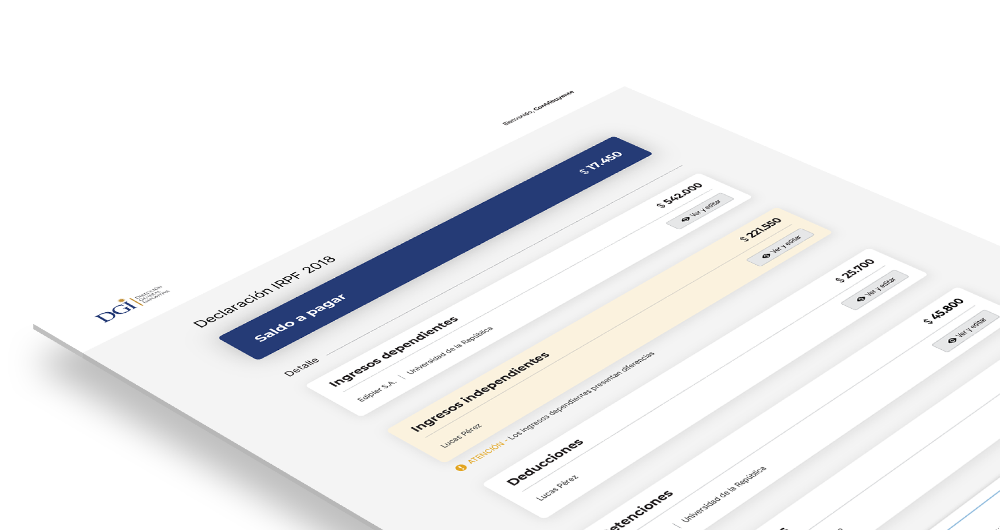
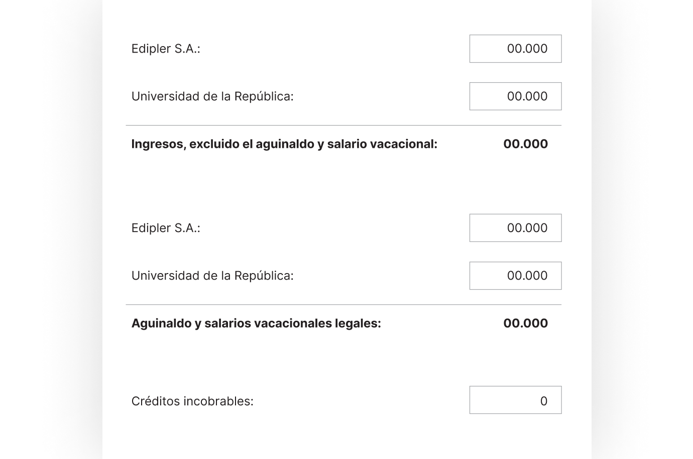
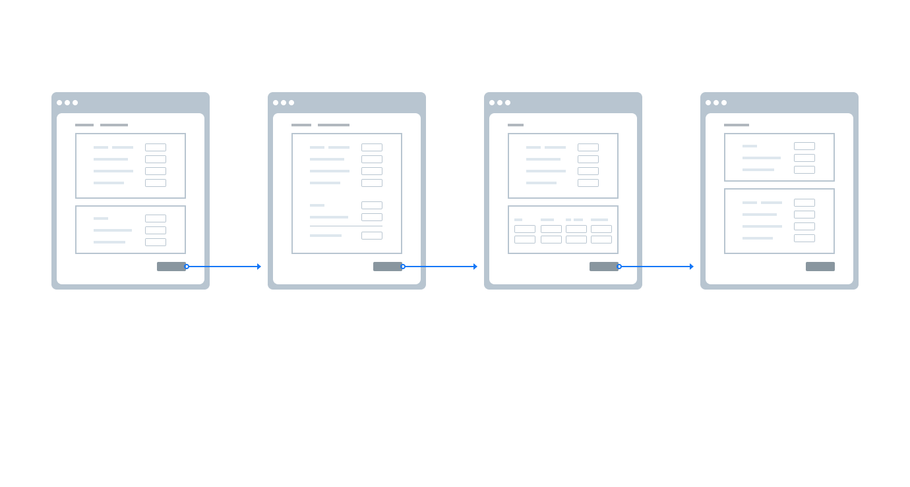
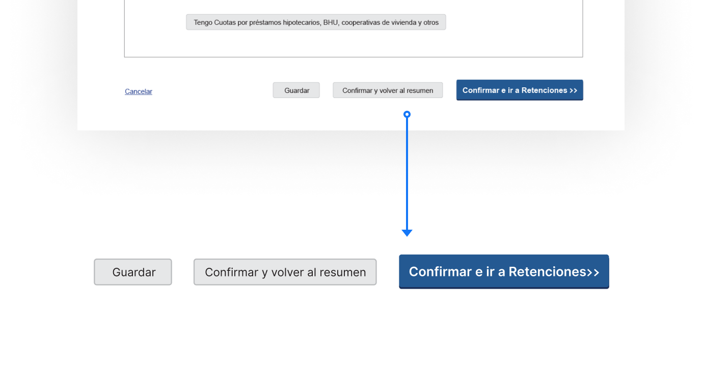

Personal income tax declaration
A simple and intuitive way to file your taxes

Client
DGI, the government agency dedicated to tax control in Uruguay, needed a solution that allowed taxpayers to make their own income tax declaration.
Challenge
Due to the heterogeneity of the taxpayers, the proposal had to be accessible (AA minimun level), with focus on usablitiy and be very intuitive.
Proposal
The final design focused on a summary screen that presented the final amount to pay or collect, along with with the detail that led to that amount.
Cards
The summary screen design was solved with a set of cards, which show the breakdown of the final amount to be collected / paid, indicating the item, the quantity and the company to which they correspond.
Through these cards you have access to the forms, in which you can edit the data already loaded by the DGI or complete missing information.

- The first card is the result card, in charge of indicating the final balance to pay or collect.
- The other cards show the breakdown of that balance. In this case, the card shows that the user has two dependent incomes, one from the company Edipler SA and the other from the University of the Republic.
- The "View and edit" button is the one that provides access to the form for each item. All the data that is edited within that form will have an impact on the amount shown on the card.
- The items that present differences are shown with background colored cards accompanied by attention or error messages. These messages are located under the cards, indicating the adjustments to be made in order to send the statement.
Forms

Fields
Each item has its peculiarities, so each form is different. Many of the fields depende on manual entry, while others depend on the combination of 2 or more fields, so we decided to make them automatic and to look like the result of a tally.
Navigation
Once inside a form, there are two ways to navigate between them:
Following a linear flow using the button "Confirm and go to [next form name]"
Navigate to any of the other forms through tabs

It was important that the user had an overview of everything, since some changes in one form affected data in another. That's why we decided to provide two options to give more control to the user.
Actions
Each number entered corresponds to real money, so completing these fields is a stressful process. Also, this has the character of an affidavit, which differentiates it even more from a simple form. We took this into account from the beginning and that is why we include several actions to facilitate completion:
It is possible to confirm the changes and return to the summary screen (cards) or confirm and follow the flow of forms. You can also save your progress, at any moment, to continue the process on another time.
If you made modifications but made mistakes, there is the possibility of restoring the original data entered by DGI.

Shots


In its first year of existence, 75% of the declarations were made through the site and calls and in-person queries were considerably reduced.

SIICEX Agenda